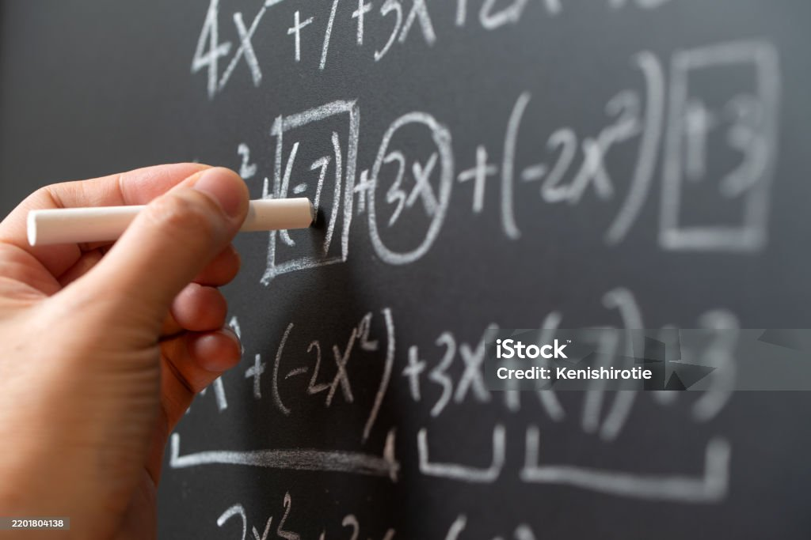

PRESENTACIÓN Y DESCRIPCIÓN DEL PROYECTO

DESCRIPCIÓN DEL PROYECTO
Matemáticas en acción: analizamos datos reales para comprender nuestro entorno.
- Centro de interés o temática
El proyecto se centra en el uso de las matemáticas para analizar situaciones reales del entorno cercano del alumnado mediante la recogida, organización, interpretación y comunicación de datos.
-Nivel al que va dirigido
6º de Educación Primaria.
- Temporalización aproximada
El proyecto se desarrollará a lo largo de 2-3 semanas, con una duración estimada de 10 a 12 sesiones de 45-60 minutos.
- Materia o materias implicadas
Matemáticas (área principal)
Lengua Castellana
Competencia Digital (de forma transversal)
- Idioma
Castellano.
- Descripción general del proyecto
En esta Situación de Aprendizaje, el alumnado trabajará como “investigadores de datos”, abordando una situación real de su entorno (por ejemplo, hábitos saludables, uso del tiempo libre o reciclaje).
Durante el desarrollo del proyecto, el alumnado realizará las siguientes tareas:
Diseñar y elaborar encuestas sencillas.
Recoger datos reales de su entorno cercano.
Organizar la información en tablas y gráficos.
Interpretar los resultados utilizando conceptos matemáticos como la media, la moda o los porcentajes.
Extraer conclusiones a partir de los datos obtenidos.
Comunicar los resultados mediante una presentación digital utilizando herramientas como Canva, Genially o documentos de Google.
El producto final consistirá en la elaboración de una presentación digital en la que el alumnado exponga sus conclusiones de manera clara, organizada y visual.
- Justificación del proyecto
Este proyecto se fundamenta en las conclusiones obtenidas en la rutina de pensamiento realizada previamente.
En dicha reflexión se comprobó que el uso de la tecnología y de metodologías activas en el área de Matemáticas mejora significativamente la motivación y la participación del alumnado. Asimismo, se evidenció la importancia de conectar el aprendizaje matemático con situaciones reales que permitan al alumnado investigar, analizar datos y comunicar resultados.
A partir de estas conclusiones, se ha diseñado esta Situación de Aprendizaje con el objetivo de:
Fomentar un aprendizaje significativo basado en contextos reales.
Potenciar la participación activa del alumnado mediante el aprendizaje basado en proyectos.
Desarrollar la competencia matemática a través del análisis de datos.
Integrar el uso de herramientas digitales de manera funcional, favoreciendo la competencia digital.
Promover el pensamiento crítico y la capacidad de interpretación de la información.
Además, se han incorporado mejoras derivadas de la reflexión realizada:
Se incluye una fase inicial en la que se explicará de forma clara el uso de las herramientas digitales que se van a emplear.
Se ha planificado una mejor organización del tiempo, estructurando las sesiones de manera más clara.
Se incorpora una fase final de reflexión en la que el alumnado analizará tanto los resultados obtenidos como el proceso seguido durante el proyecto.
Este planteamiento contribuye al desarrollo de competencias clave como la competencia matemática, la competencia digital y el pensamiento crítico, fundamentales en el aprendizaje actual.
Asimismo, el diseño de esta situación de aprendizaje responde a los indicadores del marco de referencia digital docente, ya que permite gestionar la incertidumbre en la planificación, integrar herramientas digitales en el proceso de enseñanza-aprendizaje y crear una secuencia didáctica coherente adaptada al contexto del alumnado.